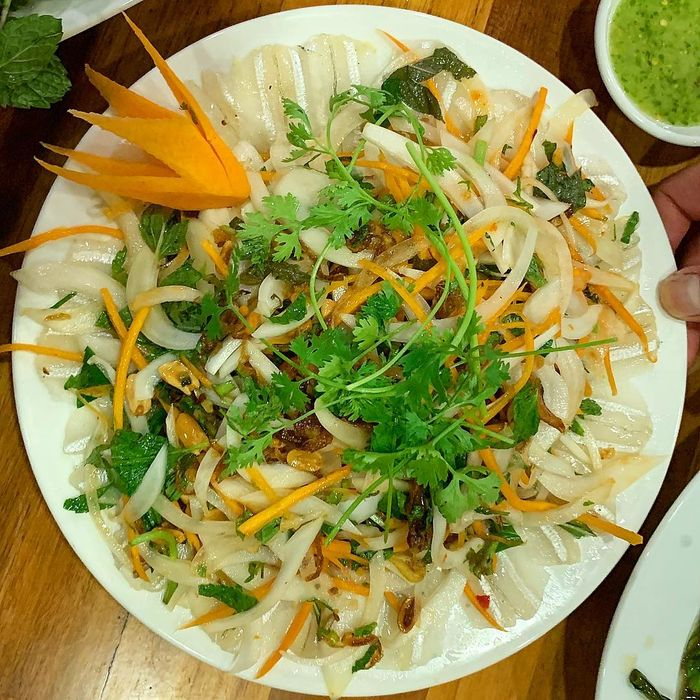
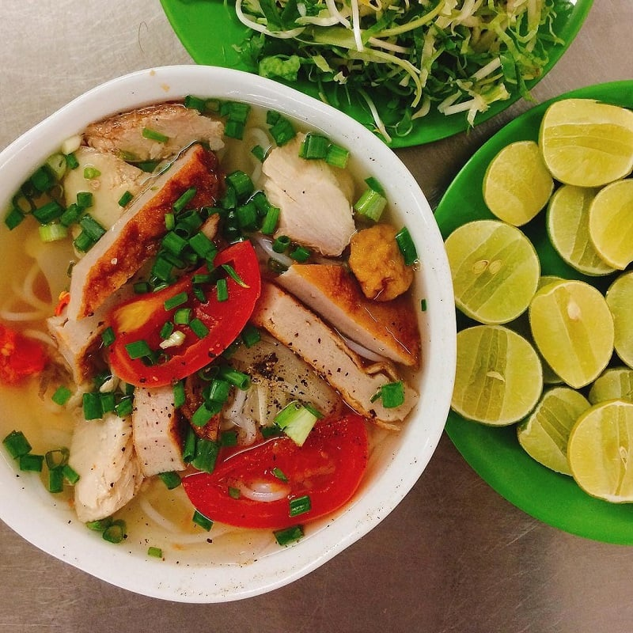
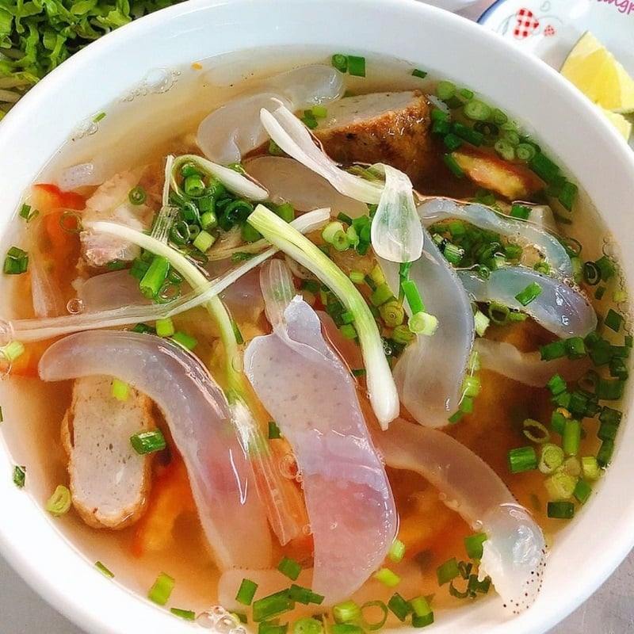
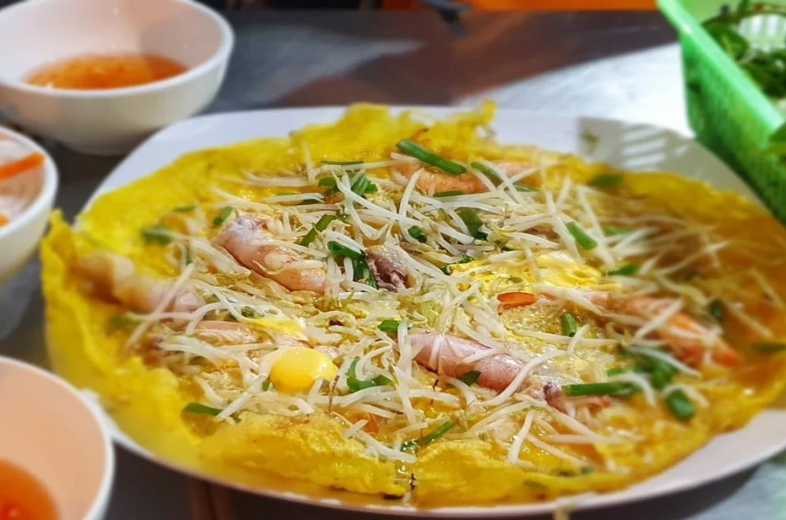
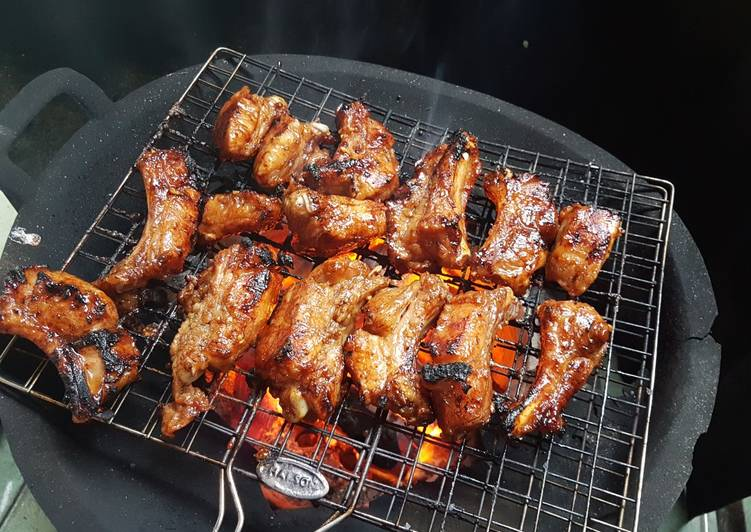
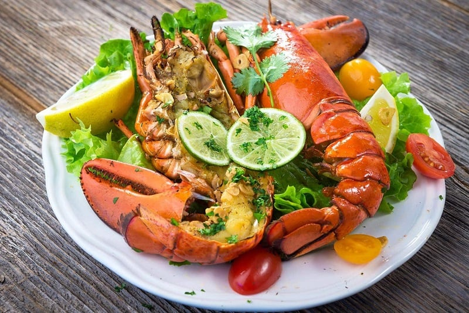

Top 5 best foods in Nha Trang you should try at least once
Nha Trang has an impressive culinary scene, rivaling its own reputation as a beachy party city. Being famous for its marine treasures, of course, Nha Trang’s seafood is legendary, but the resort town has more to offer foodies than crab legs and coastlines.
1. White sardine fish salad - A signature of Nha Trang cuisine.
This is a popular Nha Trang dish that is served in many restaurants. The principal ingredient of this dish is white sardine freshly caught from the sea. Tamarind, lime, or sour star fruit will be used to extract the fish bone and remove the fishy odor. After being turned ivory-white or gray, the fish meat will be mixed with “thính” (very thin sliced pork skin with smashed peanut), sliced onion, and ginger, herbs.

White sardine salad is tourists’ favorite specialty (Source: Collected)
To enjoy this dish, wrap white sardine salad in rice paper and mix green leaves, herbs, sour star fruit, and green banana. Then, dip it in the sauce made of fish bone stock and mix it with minced meat, chili, lemon milk, and garlic.
2. Grilled fish cake noodles - The most popular Nha Trang food
If Hanoi is known for Pho and Hue is known for Bun Bo Hue, then Nha Trang is known throughout the country for its grilled fish cake noodles. The broth is light, pure, and just a tad sweet. This is one of the best food in Nha Trang, and it is made from mackerel and sailfish bones that have been stewed.
Fresh mackerel is used to make grilled fish. As a result, each piece of grilled fish is extremely chewy, juicy, and fragrant. You cannot resist a bowl of vermicelli topped with a tasty chewy fish cake, fresh herbs, and dipping sauce. With just a bowl of fish noodles, you can already feel the breath of the Nha Trang sea. Remember to eat the noodles with fresh peppers and herbs to taste the deliciousness of the dish.

Grilled fish cake noodles boast a savory flavor (Source: Collected)
3. Jellyfish Vermicelli - Specialty in Nha Trang
Jellyfish vermicelli is a delicacy that contributes to Nha Trang's culinary pride. The jellyfish caught by fishermen offshore is the principal ingredient in this. The rich broth made from fish and other seafood ingredients draws tourists to enjoy jellyfish vermicelli.
Aside from the thick and crunchy white jellyfish pieces, you can also add steamed and fried fish cakes, fresh onions, chili, and herbs. The jellyfish vermicelli bow is tasty, sweet, and not fishy. This is the taste of the sea you will remember long after you leave Nha Trang.

Jellyfish Vermicelli - A specialty in Nha Trang (Source: @gratitravel)
4. Squid pancake - The creativity of Nha Trang cuisine
Squid pancakes in Nha Trang are like pancakes in Saigon but smaller and crisper. These pancakes include fresh squid and shrimp beside the commonly required ingredients.
All the squids are fresh and taken directly from the wharf. Then, to keep them fresh, they are washed and cooked immediately. After a while, the ink within the squid bursts and blends. Having squid pancakes with fresh vegetables and deliciously sour, spicy fish sauce will bring you a flavor that is hard to forget.

Visually-attractive Nha Trang squid cake (Source: Collected)
5. Lac Canh grilled beef - The option for when you don’t know what to eat in Nha Trang
Lac Canh grilled beef restaurant is the most popular restaurant for grilled beef in Nha Trang. The secret to perfect grilled beef is a recipe that combines beef with honey and over ten different spices. The recipe has been passed down from generation to generation and is only known to the members of the restaurant owner's family.
In particular, the beef is cut into cubes, making it easy to eat. Diners are free to grill the beef however they see fit and enjoy the dish in their own unique way. It's as if you're having a barbecue in your backyard.

Grilled beef at Lac Canh grilled beef restaurant (Source: mia)
5. Binh Ba lobster - The best seafood in Nha Trang
Binh Ba lobster is a popular Nha Trang delicacy that many visitors want to try. The famous lobster, with its colossal size and plenty of fresh and sweet meat inside, can be prepared in a variety of ways, from simply steaming, grilling, or simmering to more complex dishes such as the local sweet and sour lobster soup.

Binh Ba lobster (Source: Collected)